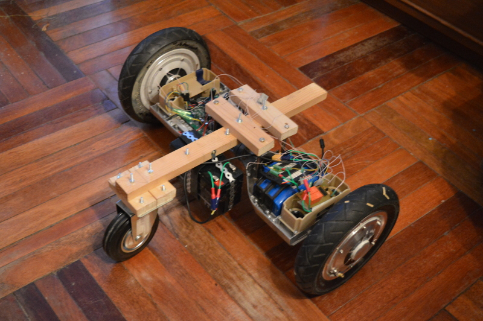
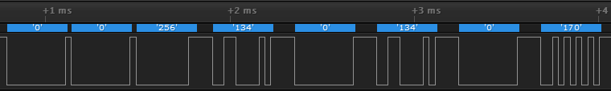
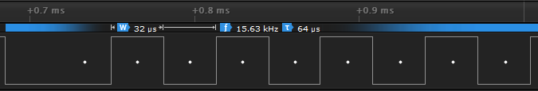
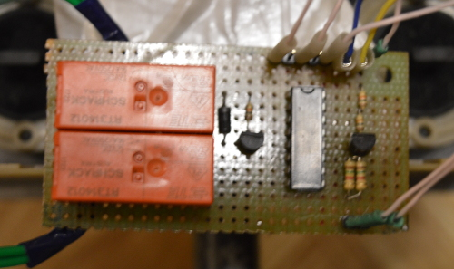
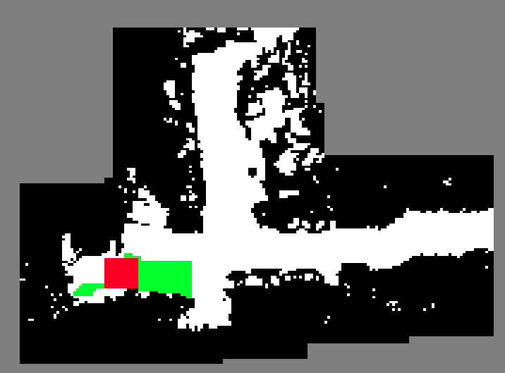

4 Практическая реализация разработанных алгоритмов
Последний раздел работы посвящен практической реализации разработанных алгоритмов. Для этого был применен пакет программ, реализован программный драйвер мобильного робота, кроме того, для экспериментов был изготовлен действующий макет мобильного робота.
4.1 Робототехническая платформа для испытания разработанных алгоритмов
Робот представляет собой трехколесную платформу собственной разработки, основой платформы является гироскутер “Smartbalance 10”. Два колеса ведущие, третье колесо ведомое (см. рисунки 15, 16). Характеристики платформы приведены в таблице 1.

Рисунок 15 – Внешний вид робототехнической платформы сзади

Рисунок 16 – Внешний вид робототехнической платформы спереди
Платформа оснащена бортовым аккумулятором напряжением 36 В для питания двух электродвигателей гироскутера, а также аккумулятором 12 В для питания времепролетной камеры Kinect 2.0.
Таблица 1—Характеристики платформы собственной разработки
|
Габаритные размеры |
600 x 600 x 400 мм |
|
Масса |
14 кг |
|
Максимальная скорость перемещения |
2 м/c |
|
Максимальное время автономной работы |
4 ч |
|
Грузоподъемность |
15 кг |
К гироскутеру присоединяется рама (см. рисунок 17), разработанная для крепления третьего ведомого колеса, аккумулятора, а также профильной панели. На панели крепятся бортовая ЭВМ, стойка с времепролетной камерой, контроллер двигателей, переходник для питания камеры.

Рисунок 17 - Внешний вид рамы
Непосредственно на гироскутере установлена электронная плата собственной разработки - коммутатор (см. пункт 4.2.1 настоящей работы). Коммутатор предназначен для коммутации силовых проводов.
4.1.1Анализ работы гироскутера.
На рис. представлен общий вид гироскутера.

Рисунок 18 - Внешний вид гироскутера
На рис. представлена общая структурная схема устройства гироскутера.

Рисунок 19 - Общая структурная схема устройства гироскутера
Для того чтобы иметь возможность управлять гироскутером, используя внешний блок управления, был применен метод описанный в статье [], позволяющий с помощью логического анализатора (модель и программа) проанализировать протокол обмена данными между платами гироскопов и основной платой гироскутера. Программа для работы с логическим анализатором интерпретирует низкий и высокий логический уровни, как передаваемые биты дан.
С помощью программы была получена диаграмма передаваемых с платы гироскопа данных (см. рисунок 20) и идентифицирован протокол их передачи.
Протокол представляет собой UART RS-232. Данные передаются пакетами по 9 бит. Диаграмма, передаваемых по протоколу данных, представлена на рисунке 20. На диаграмме видна последовательность передаваемых пакетов.

Рисунок 20 - Диаграмма, полученная с помощью программы
На рисунке 21 представлена передача последнего пакета из последовательности пакетов представленных на рисунке 20, на диаграмме (см. рисунок 21) видно что пакет состоит из стартового бита, 9 бит, кодирующих число 170 и одного стоп-бита.

Рисунок 21 - Диаграмма передачи одного пакета
В таблице 3 представлены характеристики протокола, определенные с помощью программы.
С помощью описанного выше метода было установлено, что каждые 300 мкс циклически повторяется следующая последовательность пакетов:
- Команда разрешения. Имеет два значения - 170, при этом число, кодирующее угол наклона платы гироскопа, игнорируется в дальнейшем основной платой гироскутера. Значение - 85, при этом число, кодирующее угол наклона платы гироскопа, обрабатывается основной платой гироскутера.
- Фиксированное число 0
- Фиксированное число 0
- Фиксированное число 256
- Младшие 9 бит числа, кодирующего угол наклона платы гироскопа.
- Старшие 9 бит числа, кодирующего угол наклона.
- Повтор младших бит числа, кодирующего угол наклона.
- Повтор старших бит числа, кодирующего угол наклона.
Угол наклона платы гироскопа прямопропорционален скважности ШИМ (Широтно-импульсная модуляция) сигнала, подающегося на обмотки электродвигателя, а следовательно угол наклона прямопропорционален и скорости вращения двигателя.
Угол наклона задается 18-битным целым числом.
Изменение угла наклоны платы, показано на рис.
При анализе работы гироскутера замечены особенности управления, и выделены два режима работы:
1. При задании угла наклона одного знака с обоих плат гироскопов, скорость двигателей достигает пропорциональной углу наклона, после чего через несколько секунд двигатели начинают ускоряться до максимально возможной скорости. Если угол наклона сохраняется то, скорость двигателей увеличивается чтобы компенсировать, наклон человека, управляющего гироскутером или чтобы увеличить скорость движения вперед.
2. При задании угла наклона разного знака, скорость каждого из двигателей достигает скорости, пропорциональной углу наклона и остается неизменной.
Проведенный анализ работы гироскутера показал, что стабильное управление гироскутером с помощью задания угла наклона, возможно только при втором режиме работы, когда углы наклона плат гироскопов имеют разные знаки и двигатели вращаются в разные стороны.
Возникает проблема управления гироскутером при движении вперед и назад.
4.1.2 Модификация гироскутера.
Платы гироскопов были удалены. Вместо них для подачи команд управления на основную плату гироскутера и имитирования сигналов с плат гироскопов была установлена плата с микроконтроллером STM32, соединенная с бортовой ЭВМ по интерфейсу UART RS-232 8 bit.
Для решения проблемы управления гироскутером при движении вперед и назад разработана электронная плата - коммутатор, аппаратно меняющая(реверсирующая) направление вращения правого двигателя по внешнему сигналу. Это достигается переключением фаз одного из двигателей, а также переключением сигналов с датчиков Холла, установленных на двигателе. Что позволяет задавать движение вперед и назад из второго режима работы гироскутера.
Здесь и далее, при управлении имитируемый угол наклона платы гироскопа считается управляющим воздействием, пропорциональным скорости соответствующего двигателя.
Общая структурная схема робота после модификаций имеет вид,
представленный на рисунке 22.
Рисунок 22 - общая структурная схема робота
Схема алгоритма работы программы управления двигателями, представлена на рисунке 23.

Рисунок 23 - Схема алгоритма работы программы управления двигателями
Электрическая принципиальная схема коммутатора, реверсирующего правый двигатель по внешнему управляющему сигналу, представлена на рисунке.

Рисунок 24 - Электрическая принципиальная схема коммутатора
Внешний вид платы коммутатора представлен на рисунке 25.

Рисунок 25 - Внешний вид платы коммутатора
4.1.3 Разработка протокола управления скоростью двигателей
Для передачи команд управления с бортовой ЭВМ на плату управления двигателями робота разработан протокол. Протокол использует интерфейс UART RS-232.
| Бодрейт | 9600 |
| Количество информации в одном пакете | 8 бит |
Команды управления для моторов кодируется однобайтовым числом 0 - 255.
Диапазон изменения скорости для левого и правого моторов: от -7 до +7.
Для левого мотора используются 4 старших разряда числа, для правого мотора - 4 младших разряда числа.
Рассмотрим 4 старших разряда для левого мотора:
1111 - представление в двоичной системе счисления.
Самый старший бит задает направление вращения колеса, 1 - вперед, 0 - назад.
При вращении вперед скорость задается остальными тремя битами, двоичным числом от 001 до 111, т.е. 7 скоростей вперед. 001 - самая медленная, 111 - самая быстрая.
Для задания положительной скорости вращения назад скорость задается, двоичным числом от 111 до 001 , т.е. 7 скоростей назад. 111 - самая медленная, 001 - самая быстрая.
Тоже самое для второго мотора.
Пример принятого байта:
1000 1000 - оба колеса не двигаются.
1111 1111 - оба колеса вперед, с максимальной скоростью.
0111 0111 - оба колеса назад, с минимальной скоростью.
1001 0111 - левое колесо вперед с минимальной скоростью, правое назад с минимальной скоростью.
0110 1101 - левое колесо назад со скоростю 2, правое колесо вперед со скоростью 5.
Управляющая команда 0000 0000 - инвертировать сигнал разрешения исполнения команд.
Комбинации 10000000 и 00001000 - не определены и игнорируются.
4.1.4 Бортовая ЭВМ
Мобильная платформа оснащена бортовой ЭВМ для управления и обработки
информации с времепролетной камеры. Бортовая ЭВМ представляет собой
ноутбук модели ASUS S300CA. Выбор осуществлялся из необходимости
размещения бортовой ЭВМ на мобильной платформе и мощности процессора
установленного в ЭВМ, исходя из требований для использования реализации
алгоритма SLAM. В ЭВМ установлен процессор Intel Core i7, 4 Гб
оперативной памяти и 500Гб постоянной памяти.
4.1.5 Времепролетная камера
В качестве времепролетной в задании на НИР была дана камера Microsoft
Kinect 2.0, обладающая наибольшей коммерческой доступностью и простотой
использования относительно других камер. Характеристики Microsoft Kinect
2.0 приведены в таблице 2.
Microsoft Kinect 2.0 работает по принципу «range gated images» [24].
В начальный момент времени включается освещение сцены инфракрасной
подсветкой. Затвор ифракрасного приемника закрывается в момент времени
t. Тогда объекты, расположенные дальше, чем t/(2c), где с – скорость
света, не будут видны на камере . Свет не успевает отразиться от них до
закрытия затвора. Точка, расположенная вплотную к камере будет
освещаться всё время экспозиции t и иметь яркость I. Следовательно,
любая точка экспозиции будет иметь яркость от 0 до I, и эта яркость
будет репрезентацией расстояния до точки. Чем ярче точка – тем ближе
объект. Для увеличения точности и дальности действия в Kinect 2.0
используется последовательность вспышек с разным временем срабатывания
затвора приемника.
4.2 Программное обеспечение для реализации алгоритмов
Для реализации разработанных алгоритмов выбран программный пакет ROS (Robot Operating System). Выбор ROS для разработки определён по следующим причинам – удобство разработки и использования, универсальность, модульность, открытый программный код, возможность использования готовых пакетов. Для ROS доступны удобные инструменты сбора информации с датчиков в процессе работы системы.
ROS (Robot Operating System) [9] –
программный пакет для роботов с открытым исходным кодом (лицензия BSD).
Он не заменяет операционную систему, но расширяет ее набором модулей,
необходимых для управления РТС. Основной целью ROS является поддержка
повторного использованиякода в робототехнических исследованиях и
разработках. ROS состоит из двух частей: ядро ROS – минимально
необходимый для работы набор инструментов, модулей и библиотек; и набор
развиваемых пользователями пакетов, которые реализуют различные функции
робототехники: работа с оборудованием, обработка информации,
моделирование, навигация и многое другое.
Ядро ROS разработано так, чтобы как можно меньше зависеть от архитектуры
конечной системы. Граф вычислений ROS представляет собой одноранговую
сеть процессов (узлов в терминологии ROS), которые обрабатывают данные
совместно. Узлы могут обмениваться данными несколькими способами: через
системные сообщения (темы в терминологии ROS), сервисы или сервер
параметров. Структура данных и логика обмена может быть любой. При
старте узлы сообщают свои регистрационные данные мастер-узлу, который
хранит регистрационную информацию. От него узлы могут получить
информацию о других зарегистрированных узлах и наладить с ними связь
напрямую через согласованный протокол обмена (наиболее распространен в
ROS протокол TCPROS, в основе которого лежит TCP/IP). Мастер информирует
узлы об изменениях в системе ROS, что позволяет динамически создавать
соединения при старте новых узлов. Узлы могут располагаться на различных
компьютерах, и топология системы может изменяться в процессе работы без
необходимости перекомпиляции. В отличие от других решений, код ROS
максимально гибкий - он не накладывает ограничений на тип приложений,
использованные узлы, структуру связи узлов и цикл работы. ROS не зависит
от языка программирования, клиентские библиотеки уже реализованы для
Python, C++, Lisp, существуют экспериментальные библиотеки для Java и
Lua. Такой подход позволяет ROS легко интегрироваться с различными
архитектурами и строить системы различной сложности поверх нее.
4.3 RTAB-Map ROS
SLAM алгоритм RTAB-Map имеет готовую реализацию в виде подключаемого пакета ROS.
На рисунке 26 представлен результат работы алгоритма RTAB-Map.
Рисунок 26
4.4 Реализация алгоритма обхода 2D графа
Предложенный алгоритм обхода 2D реализован на языке C++ с использованием средств, входящих в состав программного пакета ROS.
Для визуализации алгоритма использована библиоткека SFML [23].
Результат работы программы обхода 2D графа, представлен на рисунке 27.

Рисунок 27 - Результат работы программы обхода 2D графа
4.5 Реализация алгоритмов поиска пути и планирования траектории движения
В качестве реализации алгоритмов поиска пути и планирования траектории выбран стек навигации ROS [19]. Стек навигации является концепцией построения графа узлов ROS для реализации алгоритмов 2D навигации и набор готовых узлов, реализующих эту задачу. На рисунке 14 приведена схема узлов стека навигации ROS.

Рисунок 14 - Граф узлов стека навигации ROS
Стек навигации ROS состоит из пяти элементов – глобальный
планировщик (global_planner), локальный планировщик (local_planner),
алгоритм построения глобальной карты (global_costmap), алгоритм
построения локальной карты (local map) и алгоритм восстановления
(recovery_behaviors).
Алгоритм построения глобальной карты, отвечает за построение
вспомогательной карты необходимой для глобального планировщика пути. В
качестве такого планировщика выбран costmap_2d [20],
он строит весовую сеточную 2D карту на основе 2D сеточной карты,
полученной, например, алгоритмом SLAM, и датчиков робота с учётом
геометрических ограничений робота. В использованном алгоритме
учитывается только радиус круга, обеспечивающий поворот робота без
коллизий. Ячейки полученной карты содержат значения, отражающие
возможность центра робота находиться в данной точке от явной коллизии до
свободного пространства. Алгоритм построения локальной карты выполняет
аналогичную функцию, но так как локальная карта используется для объезда
динамических препятствий, то она строится только на основании данных с
датчиков, имеет небольшой фиксированный размер (в данной работе размер
динамического окна составляет 2x2 м) и обновляется с большей в несколько
раз частотой, чем глобальная карта. В качестве алгоритма построения
локальной карты использовался тот же алгоритм costmap_2d, что и для
построения глобальной карты, но с другими настройками. Глобальный
планировщик решает задачу поиска оптимального пути движения робота к
заданной целевой точке на основании глобальной карты. В данном случае
используется узел global_planner [21],
реализующий алгоритмы A* поиска глобального пути на сеточной весовой
карте. Локальный планировщик отвечает за движение робота вдоль
глобального пути с учётом особенностей локомоции робота и возникающих
динамических препятствий на пути движения. В текущей разработке
используется алгоритм dwa_local_planner [22].
Принцип его работы заключается в переборе всех возможных управляющих
комбинаций линейной и угловой скорости в определённых пределах с
заданным шагом. Среди всех вариантов отбрасываются те варианты, которые
приведут к столкновению робота с окружающими объектами при движении с
соответствующей скоростью в течение некоторого времени. Из оставшихся
вариантов выбирается тот, чей вес на основе значений локальной карты и
близости к глобальному пути меньше чем у остальных.
Алгоритм восстановления – это набор действий, которые совершает
робот в случае, если локальный или глобальный путь найти не удалось. В
текущей работе использовалась очистка локальной карты и полный поворот
робота на месте. Такой алгоритм восстановления позволяет избавить
построенные карты от ошибок, возникших от быстродвижущихся динамических
препятствий.